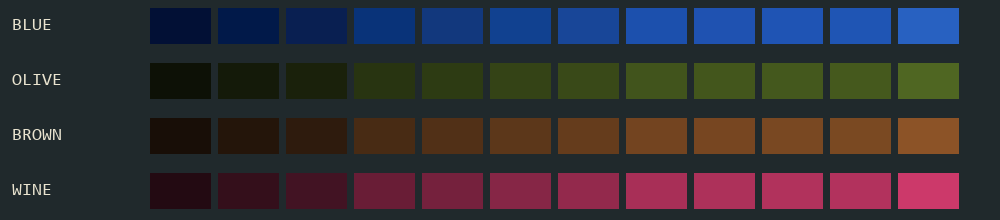
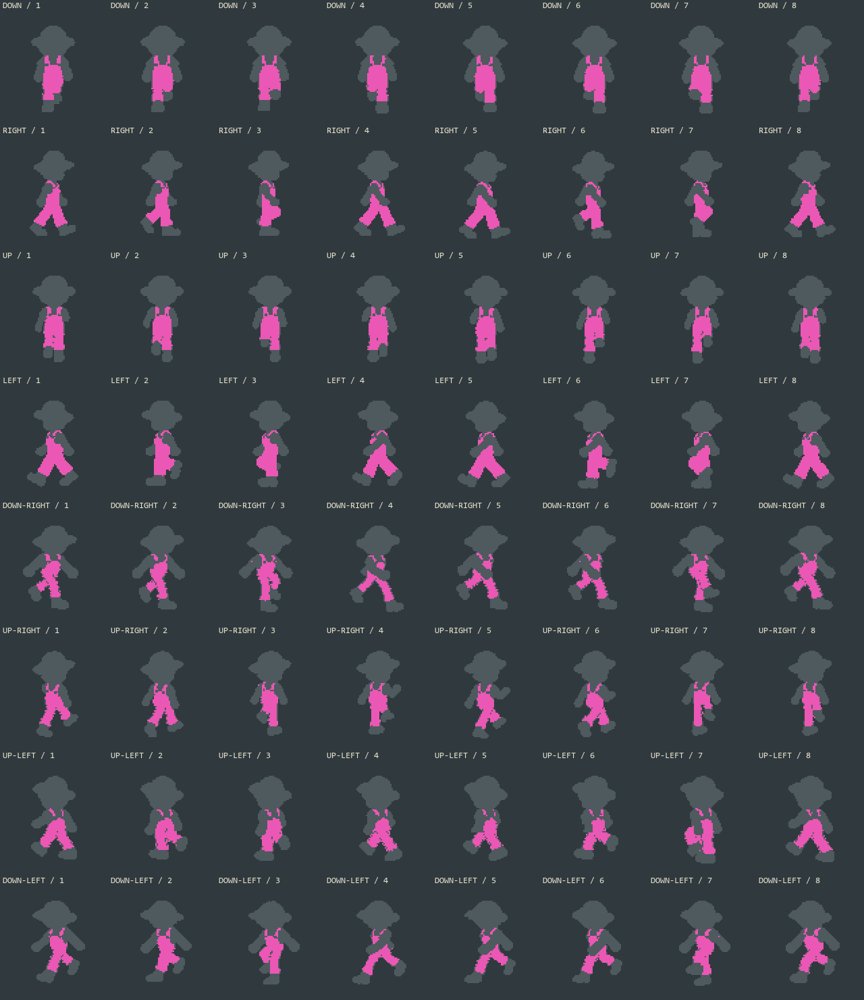

BLUE — RIGHT reference standard

RIGHT blue standard plus olive, brown and wine. Newly approved DOWN included. The same 64 poses; only garment pixels change.
Native 80px cells, eight frames at 10 FPS. Choose 1x to compare all directions together, or 2x for the game display size.




Awaiting color approval; preview-only outputs. All original source frames retained. Pixel invariance and palette report